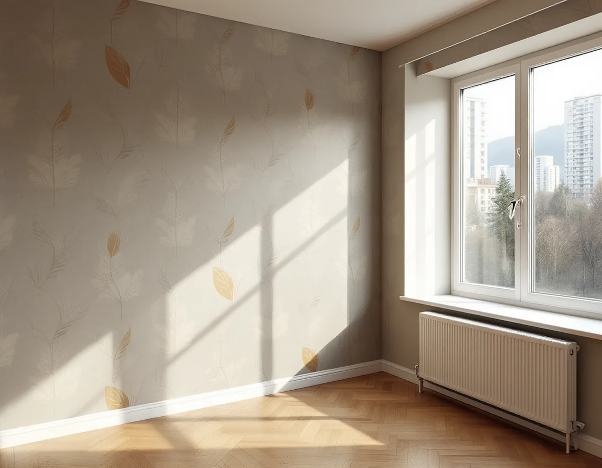
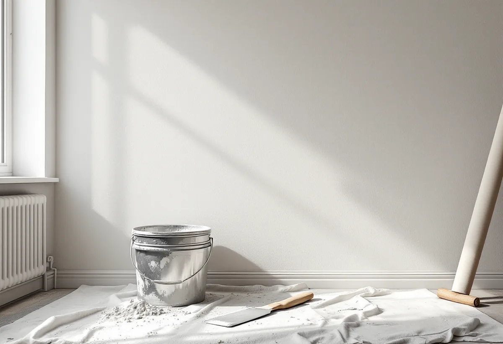

Platsbesök
Vi går igenom upplåtelseformen och ser vad väggarna är gjorda av.
I Skärholmen ligger de flesta bostäderna i flerbostadshus, och de flesta är hyresrätter. Vem som får byta tapet, vem som står för kostnaden och om rotavdrag gäller beror därför på hur du bor. Geal Entreprenad AB tapetserar i lägenheter och radhus i Skärholmen och reder ut upplåtelseformen innan arbetet planeras.

Enligt en skrift från Riksutställningar och Stockholms stadsmuseum, återgiven i Stockholmskällan, började inflyttningen i det nya Skärholmen 1965, och 1968 invigdes Skärholmens centrum. På höjden ovanför centrum ligger ett område med tjugotvå skivhus i 6–8 våningar, ritade på 1960-talet och uppförda under miljonprogrammet. När Stadsmuseet klassificerade bebyggelsen 2006 bedömde det att området har mycket stora stadsbildsmässiga värden och även samhällshistoriska värden.
Stockholms stads områdesfakta för 2025 visar hur bostäderna fördelar sig. Av stadsdelens 3 538 bostäder hör 1 380 till allmännyttan och 655 är övriga hyresrätter, medan 960 är bostadsrätter och 543 äganderätter i småhus. I hela stadsdelsområdet Skärholmen är 11 306 av 16 620 bostäder hyresrätter.
Lägenheterna är för det mesta medelstora. Av stadsdelens 2 772 bostäder i flerbostadshus har 1 065 tre rum och kök, 806 två rum och kök och 482 fyra rum och kök. Ritningen till ett av skivhusen, Ekholmsvägen 349–351 från 1964, visar lägenheter på 1–3 rum och kök, där varje plan från första till fjärde trappan har sex lägenheter på tre rum och kök med matrum och balkong mot söder. Vid tapetsering i en sådan lägenhet kan vi ta ett rum i taget, så att resten av bostaden går att använda medan arbetet pågår.

Jordabalkens hyreskapitel ger bostadshyresgäster rätt att på egen bekostnad måla, tapetsera och göra jämförliga åtgärder i lägenheten (12 kap. 24 a §). Minskar lägenhetens bruksvärde av det har hyresvärden rätt till ersättning för skadan. Regeln får bara avtalas bort i vissa fall, bland annat när lägenheten hyrs ut av den som har den med bostadsrätt.
Samtidigt ska hyresvärden enligt 12 kap. 15 § med skäliga tidsmellanrum ombesörja tapetsering, målning och andra sedvanliga reparationer när lägenheten har försämrats genom ålder och bruk, om inget annat har avtalats på det sätt lagen tillåter. Är tapeten i hyreslägenheten sliten kan det därför vara värt att fråga hyresvärden först.
Vill du själv byta tapet, till exempel i ett sovrum eller på en enstaka vägg, kan du anlita oss. Välj gärna en tapet och ett utförande som inte sänker lägenhetens bruksvärde, och spara fakturan och tapetens nummer.
Är väggen gjuten i betong mot skivform anger Byggnadsvårdsföreningens artikel om underlag för tapetsering ett underarbete i flera steg: i- och skarvspackling, två gånger bredspackling med fingraderad sandspackelfärg, limning och därefter uppsättning. En artikel om ett miljonprogramsområde i Kalmar från 1965–66 beskriver det motsatta fallet, där elementen gjutits med millimeterprecision och ytan var så slät att spackling inte behövdes före målning eller tapetsering.
En boende i en lägenhet från 1970-talet ville ta bort tapeten för att visa den råa betongen. Föreningen svarade att väggen kanske inte är så vacker som man föreställer sig, men att det är helt okej så länge det går att tapetsera igen. En opigmenterad silikatfärg hindrar att betongen dammar.
Vid besöket knackar vi på väggarna, lyfter en kant av tapeten och ser hur slät ytan under är. Därefter vet vi om det räcker med att laga skarvar eller om hela väggen ska bredspacklas. Gäller frågan målning i stället finns mer om målare.
Äger du en bostadsrätt ska rotarbetet enligt Skatteverket göras innanför lägenhetens tak, väggar och golv och gälla åtgärder som du ansvarar för enligt föreningens stadgar. Trapphus och andra gemensamma ytor ger inget avdrag. Kontrollera därför i stadgarna att väggarnas ytskikt hör till ditt ansvar. I radhusen och småhusen med äganderätt gäller reglerna för småhus, där arbetet ska ske i bostaden du äger.
Vi går igenom upplåtelseformen och ser vad väggarna är gjorda av.
Vid behov stämmer du av med hyresvärden eller styrelsen innan start.
Spackling och tapetsering redovisas var för sig, med rotavdraget där det gäller.
Skarvar lagas och väggen bredspacklas om ytan kräver det.
Väggen limmas och tapeten sätts upp våd för våd.
Du får tapetens nummer och en bit över för framtida lagningar.
Skatteverket räknar tapetsering som rotarbete, men bara i en bostad som du äger och själv använder. En hyrd bostad ger inget rotavdrag, så i en hyresrätt betalar du hela arbetskostnaden.
I en bostadsrätt eller ett ägt radhus drar Geal av rotavdraget direkt på fakturan: högst 30 procent av arbetskostnaden och högst 50 000 kr per person och år, inom gränsen 75 000 kr för rot och rut sammanlagt. Material ger inget avdrag.
Väggarnas material, hur mycket spackling som behövs och hur många rum det gäller påverkar mest. Efter ett gratis platsbesök får du ett skriftligt kostnadsförslag och samma kontakt genom hela arbetet.
Fasad, fönster och invändig målning.
Målare i Stockholm →Takbyte, takbesiktning och plåtarbeten.
Takläggare i Skärholmen →Radhus i grupper i Bredäng, Sätra och Vårberg.
Takrenovering i Skärholmen →Radhustomterna och grannarna.
Attefallshus i Skärholmen →Radhusen, källarplanet och golvbrunnen.
Badrumsrenovering i Skärholmen →Radhusen från 60- och 70-tal.
Fasadmålning i Skärholmen →Radhus i sammanhållna husgrupper.
Fönsterbyte i Skärholmen →Miljonprogrammets radhus.
Fönsterrenovering i Skärholmen →Parkett och lamellgolv från 1960-talet.
Golvslipning i Skärholmen →1960-talskök, bostadsrätt och radhus.
Köksrenovering i Skärholmen →Lägenheter, trapphus och radhus.
Målare i Skärholmen →Rännor och stuprör i sluttningarna.
Plåtslagare i Skärholmen →Altan, plank och förråd vid radhuset.
Snickare i Skärholmen →Egna radhus i Sätra, Bredäng och Vårberg.
Takbyte i Skärholmen →Radhusen, uterum och skärmtak.
Tillbyggnad i Skärholmen →